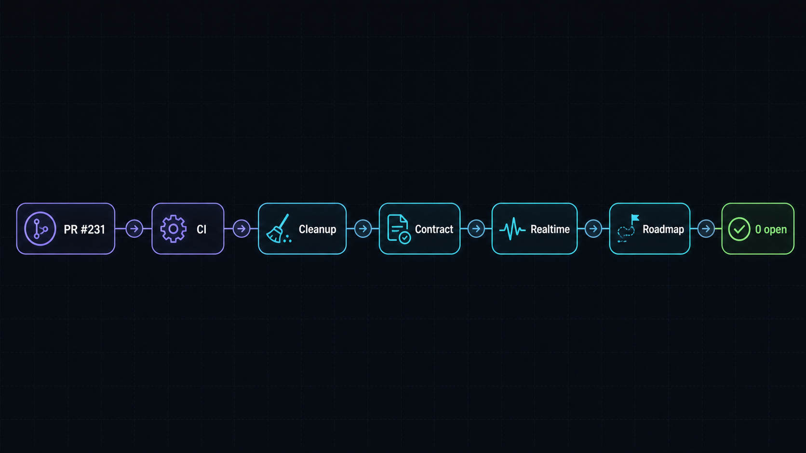

Plan: Open Brain — Work All Open Issues & Complete All Open PRs
Six-phase execution roadmap: land PR #231, harden CI, retire legacy auth/namespace debt, ship the client contract batch, deliver the realtime memory epic, and disposition the roadmap backlog. Current correction: PR #257 merged as e3cf8e5, #137 is closed deferred/no-wrapper, remaining open issues are #223 and #167, and deploy remains deferred.

Purpose
Live correction: this roadmap was authored from an older snapshot. Current live state: PR #257 merged as e3cf8e5, issue #137 is closed as a deferred/no-wrapper disposition, and Project 8 marks #137 done. #118 remains closed from PR #255. Local validation and GitHub CI passed for #257, final two-lane fix-verification returned zero findings, and deploy remained intentionally skipped. The remaining open issues are #223 and #167.
Drive the open-brain repo to a clean board: every open PR merged or explicitly held, and all remaining open issues either closed with tested, rollout-gated changes or explicitly dispositioned as roadmap items with a documented decision. The plan sequences work so infrastructure fixes (review pipeline, CI Postgres) land first and protect everything after them, and groups issues into coherent PR-sized batches that respect the repo's pre-merge gauntlet, critical self-review gate, and downstream rollout gate.
Problem
The backlog is heterogeneous and partially interdependent. PR #231 replaces the Claude review workflow with Codex but fails its own two new checks (validate/PR-Body and codex-review) — the PR body lacks the required critical self-review receipt and the new workflow fails on the PR that introduces it. Until it lands, every subsequent PR runs through a broken review pipeline. Separately, #165 documents that DB-backed integration tests silently skip in CI — the exact gap that shipped the #162 production bugs — so landing feature work before fixing CI repeats a known failure mode. The issue set spans five distinct kinds of work (CI/ops hygiene, auth/namespace retirement, client contract features, a five-issue realtime memory epic with strict internal ordering, and long-horizon roadmap items), several of which trigger the downstream rollout gate (mcp2cli, rtech-hermes, generated skills) where "local tests pass" is explicitly not the definition of done.
Solution
Execute in six ordered phases. Phase 1 repairs and lands PR #231 so the review pipeline itself is trustworthy. Phase 2 closes the CI Postgres gap (#165) and the unbounded-logs bug (#193) so every later PR gets real DB-backed test coverage. Phase 3 retires legacy auth/namespace debt (#168 → #166 → #167) in dependency order. Phase 4 ships the client-facing contract batch (#177 installable package, #204 resolver tool, #176 structured rejection) — each triggering the downstream rollout gate. Phase 5 now has #223 as the only open realtime item; #222, #221, #224, and #229 are closed historical slices. Phase 6 dispositioned #137 through PR #257; #118 was completed by PR #255 and closed. One branch + one PR per issue or tightly-coupled pair; every non-trivial PR runs the critical self-review receipt and the pre-merge gauntlet.
Issue-to-phase map
| Phase | Items | Theme | Downstream gate? |
|---|---|---|---|
| 1 | PR #231 | Codex review workflow — fix & merge | No (CI-internal) |
| 2 | #165, #193 | CI Postgres service · rolling log cap | No |
| 3 | #168, #166, #167 | n8n→ob-admin rename · stale collab docs · retire collab | Partial (#166 lives in mcp2cli skill refs; #167 touches read-fallback) |
| 4 | #177, #204, #176 | Installable Python client · UUID resolver · structured share_candidate rejection | Yes — all three |
| 5 | #223 open; #222/#221/#224/#229 closed historical | Realtime transport foundation; later runtime rollout gated | Yes for future #223 rollout; no deploy now |
| 6 | #137 | qmd deep-lookup | #118 closed by PR #255; #137 closed deferred/no-wrapper by PR #257; deploy deferred |
Relevant Files
Existing Files
- existing
.github/workflows/codex-review.yml— PR #231's new review workflow; currently fails on its own PR, must be fixed before merge. - existing
.github/workflows/claude-code-review.yml— removed by PR #231; confirm no other workflow references it. - existing
.github/workflows/(check/CI job) — #165 adds a pgvector Postgres service container +OPENBRAIN_TEST_DATABASE_URLsodbDescribeblocks stop skipping. - existing
src/tools/__tests__/lane-upsert.test.ts— the env-gated DB test that #165 makes run in CI. - existing
src/tools/append-session-event.ts— historical #229 F6 transaction fix context; no active #229 worker dispatch. - existing
src/tools/get-entry.ts+src/table-projections.ts— #192 Part A condensed-retrieval gap; #204 resolver reuses the table/projection knowledge here. - existing
src/tools/brain-answer.ts— #192 citation/excerpt behavior; contract-sensitive per docs/memory-contract.md. - existing shared-namespace / read-policy config (
shared-namespace.ts,legacySharedNamespace) — #167 removes the collab fallback once content is migrated. - existing
PERMISSIONS/ auth role tables — #168 renames the unused full-powern8nrole toob-admin. - existing
python/openbrain-memory/— #177 packaging (build, publish target, canonical redaction export); mandatory gotcha-agent review lane. - existing
docs/downstream-rollout.md— the definition-of-done gate for Phases 3–5. - existing
docs/memory-contract.md— must be read before any Phase 4/5 change to session lifecycle tools or brain_answer. - existing
docs/realtime-agent-memory-research.md— PR #225 research receipt governing the Phase 5 epic design. - existing
docs/sme/*.md— SME lane files to inject into every review swarm; update after each cycle. - existing
~/.config/mcp2cli/skills/open-brain/(external repo) — #166 stale collab defaults in entry-ops.md, namespace-ops.md, general-ops.md, SKILL.md. - existing app logger config (server bootstrap / logging module) — #193 adds 1MB rolling cap as an app-level standard.
New Files
- new
src/tools/resolve-entry.ts+ tests — #204 read-only UUID→source_type/namespace/fetch_path resolver. - new Optional NATS transport module or docs for #223 only; hosted JetStream configuration remains deferred release/deploy work.
- existing hot working-set / recovery WAL / promotion lifecycle material — #222, #221, and #224 are closed historical slices, not active file targets.
- new
python/openbrain-memory/dist/build artifacts + publish workflow (index or git-installable tag) — #177. - new migration for the 69 un-mirrored collab thoughts + entity/lane re-tag — #167.
- new roadmap decision docs for deferred items (e.g.
docs/roadmap/condensed-retrieval.md,file-references.md) — Phase 6 disposition artifacts.
Implementation Phases
IMPORTANT: Execute every phase and task step by step, in order, top to bottom.
Status markers: [] idle · [wip] in progress · [x] complete · [f] failed. All start as []; the Build Plan workflow updates them as it works.
main per issue (never code on main). Non-trivial PRs: critical self-review receipt in the PR body + /pre-merge-gauntlet. Inject matching docs/sme/ lane files into review swarms; gotcha-agent lane is mandatory for anything touching python/openbrain-memory/. Security/isolation fixes get a regression test that fails on old behavior. Update SME files after each swarm cycle.
[x] Phase 1: Land PR #231 — Codex review workflow
Historical phase complete. PR #231 is merged and is not an active open PR. The workflow/body-gate repair notes below are retained as provenance only; do not route current workers here.
1. Diagnose and fix the failing checks
[x]Pull full failed-step logs for runs 28398911736 (validate) and 28398911733 (codex-review) and identify the exact failing step in each. Found: validate = missing## Critical Self-Review/## Review Gatesections (scripts/validate-pr-body.ts); codex-review =--base+prompt CLI arg conflict AND job pinned to Linux runner lacking codex/auth.[x]Fix.github/workflows/codex-review.yml— repinned to[self-hosted, macOS, core01], dropped conflicting prompt,--output-last-messagecapture, CODEX_HOME + unset API keys for cached-login auth, added--ignore-rules --ignore-user-config(prompt-injection hardening).[x]Add the required receipt sections to PR #231's body — validated locally againstscripts/validate-pr-body.ts.[x]Confirm removal ofclaude-code-review.ymlleaves no dangling references — branch protection returns 404 (none configured), no required-check swap needed.
2. Verify the workflow does what it claims
[x]Fix pushed (d379c92, then 73251b6); codex-review posted real review comments on #231 (4 runs, gpt-5.5 / low), including one after the fork gate proving no self-block.[]Exercise the deep-review path once (/codex-deepcomment or scope threshold) and confirm gpt-5.4 / medium is selected — deferred; threshold (≥8 files / ≥400 lines) untuned, will trigger naturally on a Phase 4/5 PR.[x]Branch protection checked: main is not protected, nothing to swap.[x]Fork-PR exposure closed (added after Codex flagged it twice): same-repo job gate + trusted-commenter gate + API head-repo check before checkout.
3. Testing Strategy
Static workflow validation locally, then live verification on the PR itself — a CI workflow can only be truly validated by its own runs on both self-hosted runner types seen in the logs (macOS /Users/rico/actions-runner and Linux /home/runner/actions-runner-open-brain).
[x]ruby -e 'require "yaml"; YAML.load_file(".github/workflows/codex-review.yml")'— workflow parses.[x]actionlint .github/workflows/codex-review.yml— lints clean (self-hosted runner labels ignored per PR notes).[x]gh pr checks 231— all checks green (deploy correctly skipping on PR events).[x]PR #231 merged in the historical phase; no current merge hold remains for this roadmap sync.
[wip] Phase 2: CI & ops foundation — #165, #193
Close the CI coverage gap before any feature work: #165 wires a pgvector Postgres service into CI so the env-gated dbDescribe integration tests actually run (the gap that shipped the #162 lane_upsert production bugs). #193 caps unbounded logs (16MB and growing on the live server) with a 1MB rolling standard in app config. Two small independent PRs; #165 first because it protects everything after it.
1. #165 — Postgres service in CI
[x]Newdb-integrationjob withpgvector/pgvector:pg18service container, pinned to the Linux self-hosted runners (Docker verified on ct107/108; macOS runner excluded — it IS core01). Ephemeral port, per-run network, throwaway creds, auto teardown. PR #234.[x]Migrations run against the service;OPENBRAIN_TEST_DATABASE_URLexported (secret-masked in logs).[x]Anti-skip guardscripts/assert-db-tests-ran.ts: JUnit parse, per-suite expected counts, fails on missing/skipped suites — proven to fail on stripped-suite and all-skip fixtures. 17 live-Postgres tests executed in CI, 0 skipped.[x]Gating:deploynowneeds: db-integration(no branch protection exists to require checks; deploy dependency is the enforcement point).
2. #193 — 1MB rolling log cap as app standard
[x]Add size-capped rotation (1MB per file, keep 3–5) — PR #233 green (opt-inLOG_FILErotating sink; root cause was launchd StandardOutPath). Codex found 2 P2s → fixed (per-worker path derivation fromOPEN_BRAIN_WORKER_NAME, post-write rotation) → Codex re-review confirms; accepted residual: manually forced duplicate worker names (documented). Awaiting merge batch.[x]Cover the sibling OB logs — siblings share the singlesrc/logger.ts, so they inherit the sink for free.[]Verify on the live host after deploy — DEPLOY-GATED (env + plist change + kickstart documented in PR #233).
3. Testing Strategy
CI proves itself by running; the log cap is verified by forced-rotation test (write >1MB through the logger in a test or staging run) plus live-host observation post-deploy.
[]bunx tsc --noEmit— typecheck clean.[]bun test— full suite green locally.[]CI run on the #165 PR shows DB-backed tests executed (non-zero DB test count in output).[]Rotation test: logger writes 3MB → newest file ≤1MB, ≤5 files retained.
[wip] Phase 3: Auth & namespace retirement — #168 → #166 → #167
Retire legacy identity and namespace debt in dependency order. #168 renames the misnamed, 100%-unused full-power n8n role to ob-admin as the honest break-glass identity. #166 fixes stale collab defaults in the mcp2cli OB skill refs (external repo — promotions currently route to a frozen namespace). #167 then retires collab entirely: migrate the 69 un-mirrored thoughts, disposition the 12 entities + 4 lanes, and remove the legacySharedNamespace fallback code. #167 explicitly depends on #166 landing first so no client docs still point at collab when the fallback is removed.
1. #168 — Rename n8n role → ob-admin
[x]Rename the role across all gates + token config — PR #235 green (clean break, no alias; 20+ files;AUTH_TOKEN_OB_ADMIN). Codex review caught demote-gate parity gap → fixed (both demote gates + a third audit-found gate inpromote-shared.ts; all 15 remaining admin literals verified compound; 22-test parity suite) → re-review: mergeable, no findings.[]Rotate/issue the ob-admin token on the live host — DEPLOY-GATED (vaultwarden rename + .env swap + restart documented in PR #235).[x]Regression test:src/ob-admin-role.test.ts— 16 tests enumerating gate parity with admin, old-name rejection, non-admin unaffected. Suite 978 pass / 0 fail.
2. #166 — Fix stale collab defaults in mcp2cli skill refs
[x]Skill refs fixed — files are AUTO-GENERATED local config; regenerated viamcp2cli generate-skills open-brainagainst the fresh schema cache; zerocollabrefs remain,shared-kbdefaults present.[x]Generator/source checked — generator and OB schemas were ALREADY correct; root cause was generation against a stale (pre-2026-07-04) schema cache with empty inputSchema properties. Durable fix tracked as mcp2cli#58.[x]Server-side defaults verified correct in source (promote-entry.ts:25,scan-namespace.ts:29— both shared-kb). Issue #166 was verified from live generated mcp2cli skill refs and focused server tests, then closed on 2026-07-06 with evidence commentissuecomment-4888801608.
3. #167 — Retire the collab namespace
[]Migrate the un-mirrored collab thoughts — RELEASE/DEPLOY-GATED. Tooling ready in merged PR #237:scripts/retire-collab-migration.ts, dry-run default,--execute, idempotent (run-twice proven on scratch Postgres), queries live counts (no hardcoded 69), no destructive deletes. Runbook in PR: backup → dry-run → execute → reconcile → deploy code.[]Disposition entities + lanes — same script (--entitiesre-tag w/ conflict-archive,--lanesarchive), same release/deploy gate.[x]Legacy fallback retired in code — PR #237 green: empty-default legacy namespace,legacyFallbackEnabledfalse-default withSHARED_NAMESPACE_LEGACYescape hatch,existing_collab_idremoved (verified not contract-visible, no version bump needed).[x]Regression tests: retired-by-default contract across read/search/scan/promotion paths + 6/6 scratch-Postgres migration tests. Suite 970 pass / 0 fail. Codex review in progress.
4. Testing Strategy
Auth changes get gate-by-gate permission tests (namespace isolation is a security boundary here). The collab migration is verified by row-count reconciliation queries before and after, with the CI DB suite (now live from Phase 2) exercising the fallback-removal paths.
[]bun test— including new role-gate and fallback-removal regression tests.[]SQL reconciliation: collab un-mirrored count 69 → 0; shared-kb gains exactly the migrated set (content_hash match).[]Live smoke on hosted OB: promote → lands in shared-kb; ob-admin token passes a privileged call; old n8n token rejected.[]Downstream check perdocs/downstream-rollout.mdfor the mcp2cli skill-ref change (#166) — schema cache refreshed, agent canary reads correct defaults.
[x] Phase 4: Client contract batch — #177, #204, #176
Three client-facing contract changes, each individually triggering the downstream rollout gate. #177 makes openbrain-memory actually installable (built dist + reachable index or git-tag install) with canonical redaction exported, so rtech-hermes can drop its drifted fork — the fork already caused one production outage. #204 adds a read-only resolve_entry tool so agents stop brute-forcing five get_entry calls to answer "what is this UUID". #176 upgrades share_candidate rejection from a bare category to a structured, actionable reason with bounded resend, contract-driven so agents auto-pick-up. Order: #177 first (it's the vehicle downstream clients consume the other two through), then #204 and #176 (parallelizable).
1. #177 — Installable openbrain-memory package
Status 2026-07-06: done. PR #238 merged as ee0a7c8dc02313c4bc3bdf6a387742265a11f0a4 and issue #177 is closed. Package installability, public API/redaction documentation, clean-env wheel smoke, Python quality checks, and PR gauntlet evidence were recorded on PR #238. Downstream runtime adoption remains part of the release/downstream rollout phase.
[x]Add build + publish path (dist artifacts; pick the index/registry agent hosts can reach — or a versioned git tag installable viauv add git+...) and version discipline via the version-management standard.[x]Export canonical redaction as a public API surface (aligned with the b4a3020 superset-parity detectors) so clients stop re-implementing it.[x]Fake-transport tests for headers, session lifecycle, error redaction, wrapper call shapes (repo standard);uv run mypy+ruffzero errors.[x]Prove installability from a clean environment:uv add openbrain-memory(or git ref) in a scratch project → import → smoke call.
2. #204 — resolve_entry tool
Status 2026-07-06: done. PR #243 merged as 3b8e47ac5d4b3b614fdd26f5609242b73204f928 and issue #204 closed at 2026-07-06T01:54:16Z. Full local validation and gauntlet evidence were recorded on PR #243; downstream rollout/core01 deploy remains deferred by the current local-only instruction.
[x]Implement read-onlyresolve_entry(id, namespace?)returningresolved, id, source_type, namespace, fetch_path, checked_sources, checked_tables, statusvia known source-table allowlist.[x]Enforce auth-derived namespace predicate on the lookup, reusing repo read-policy helpers including canonical/physical shared namespace handling and global-adminnamespace: "all".[x]Contract bump to2026-07-05.memory-tools.v12; addresolve_entryto the server contract, tool schema metadata, and Python client snapshot/wrapper.[x]Functional tests cover readable found rows, admin-only archived rows, non-admin archived non-disclosure, no-readable-family roles, explicit unreadable namespaces, and adminnamespace: "all".[x]PR #243 merged; downstream rollout/core01 deploy remains deferred until release phase.
3. #176 — Structured share_candidate rejection + bounded resend
Status 2026-07-06: done. PR #244 merged as dcd5c6b743e8cf58395deacd17ec0a8f16184a26 and issue #176 closed at 2026-07-06T03:15:03Z. It adds non-leaking reject_detail classifier metadata, bounded reject_detail.resubmit_metadata for sanitized resend, contract version 2026-07-06.memory-tools.v13, append_session_event tool contract version 6, and openbrain-memory package version 0.1.3. The pre-merge-gauntlet completed: Phase 1 critical pass fixed client-attempt trust, Phase 2 swarm fixed resend root rotation, Phase 3 Claude cross-review found five issues, Phase 4 fixes landed as ad49c0b9b63782d3b5dbe0b9cae249c6600d1b66, and focused fix-verification returned clean. Final validation covered focused append-session-event tests (47 pass, 5 skip), focused contract bundle (94 pass, 5 skip), bunx tsc --noEmit, full bun test (1059 pass, 46 skip), Python focused pytest (69 pass), Python mypy, Python ruff, git diff --check, scoped GitGuardian path scan, and GitHub checks check, db-integration, python-package, PR-body validate, and GitGuardian. No core01 deploy.
[x]Design the rejection payload: category + actionable locator (safe detector name and span count) that does NOT re-leak the secret content — this is the hard constraint.[x]Implement bounded resend (attempt counter / idempotency guard) so agents can submit a sanitized version without infinite retry loops.[x]Ship it contract-driven (schema/contract version) so downstream agents auto-pick-up without hand-rolled parsing.[x]Tests: secret-bearing candidate → structured rejection with locator, no secret echoed anywhere (response, logs, DB); sanitized resend accepted; resend bound enforced.[x]Complete pre-merge-gauntlet phases 2-5 on PR #244; downstream rollout/core01 deploy remains deferred until release phase.
4. Testing Strategy
Bun unit + CI DB-backed integration for server tools; fake-transport + mypy/ruff/pytest for the Python package; then the full downstream rollout ladder since all three are contract-changing.
[x]bunx tsc --noEmit && bun test— server side green, including DB-backed tests in CI.[x]cd python/openbrain-memory && uv run mypy src/openbrain_memory && uv run ruff check src tests && uv run pytest -q— package quality bar.[]Clean-env install proof for #177 (scratch project, import + smoke call).[]Downstream rollout perdocs/downstream-rollout.md: rtech-mcps / mcp2cli schema refresh, rtech-hermes runtime/plugin adoption step, live Hermes agent canary — deferred to the release phase by the current local-only instruction.
[wip] Phase 5: Realtime memory epic — active item #223 only
Current phase state: #222, #221, #224, and #229 are closed historical slices. #223 remains open for the later NATS/JetStream runtime foundation. Under the current local-only instruction, do not stand up NATS on core01, run hosted deploys, or claim Hermes canary proof without explicit release/deploy approval.
1. #223 — NATS + JetStream transport foundation
[]Local next branch: createfeat/issue-223-nats-jetstream-foundationfrom a clean worktree under/Volumes/ThunderBolt/_tmp/open-brain/.[]Keep NATS disabled by default and preserve HTTP/MCP compatibility until explicit hosted rollout approval.[]Define the request/reply envelope and auth/namespace parity locally without opening a side-door around namespace isolation.[]Runtime install on core01, JetStream storage, hosted smoke, and Hermes canary remain deferred release/deploy work.
2. #222 — Scoped hot working set (closed historical)
[x]Closed historical slice; no active worker dispatch.
3. #221 — Recovery WAL for interrupted sessions (closed historical)
[x]Closed historical slice; no active worker dispatch.
4. #224 — Client-owned promotion/relegation lifecycle (closed historical)
[x]Closed historical slice; no active worker dispatch.
5. #229 — Operational hardening follow-up (closed historical)
[x]Closed historical slice; no active worker dispatch.
6. Testing Strategy
For the remaining #223 work: run local unit/typecheck and DB-backed CI first. Hosted deploy and live Hermes canary remain deferred until explicit release/deploy approval.
[]bunx tsc --noEmit, focused NATS/auth tests, and relevantbun testscope before PR.[]CIcheckanddb-integrationpass before merge.[]Hosted OB smoke + live Hermes canary only in a later approved release/deploy phase.
[x] Phase 6: Roadmap disposition — #137
Live Phase 6 state: #137 is closed as a deferred/no-wrapper disposition after PR #257 merged as e3cf8e5. The merged docs record that qmd stays optional/non-fatal, Open Brain owns curated qmd-derived facts only, and any future remote qmd wrapper plus runtime fallback canary belongs in a separately approved mcp2cli/qmd/host-routing issue. #118 remains closed from PR #255. #167 and #223 remain open and gated.
1. #137 — Controlled remote qmd deep-lookup wrapper
[x]Confirm the preconditions in the issue still hold: durable OB is the required path, qmd is optional, and remote wrapper implementation crosses into mcp2cli/qmd/host-routing ownership.[x]Safe local-only slice: document the optional remote-qmd escape hatch and failure semantics without building infra indocs/roadmap/optional-qmd-deep-lookup.md,docs/downstream-rollout.md,docs/memory-contract.md,README.md, andpython/openbrain-memory/README.md.[x]Closed on 2026-07-06 as a deferred/no-wrapper disposition: implementation requires a later approved wrapper issue in the owning mcp2cli/qmd/host-routing boundary; normal Hermes/Open Brain memory must not depend on qmd.
2. #118 — File references / closed-brain roadmap
[x]Capture the source-reference design and implementation into PR #255: structuredsource_refsstorage, scoped read/search/answer filtering, privileged source-ref redaction, contract updates, and regression tests.[x]Complete pre-merge-gauntlet phases 1-4: critical self-review, initial swarm fixes, Claude/Opus cross-review, Phase 3 fixes, focused security + antagonist fix-verification, local validation, CI, and board sync.[x]Merge PR #255 as144e029and close issue #118. No core01 deploy; normal squash merge tomaindid not trigger deploy under current remote workflow conditions.
3. Testing Strategy
#118 is real code and already ran the full local ladder plus GitHub CI. #137 docs/contract disposition is validated by artifact existence, issue state, git diff --check, and a focused typecheck if any package-facing docs/examples change.
[x]PR #255 focused and full local validation passed; Python package validation passed.[x]PR #255 GitHub checks passed; deploy skipped by design.[x]For #137 docs/contract slice,git diff --checkandbunx tsc --noEmitpassed locally before PR; this does not prove a future remote-qmd runtime fallback.[x]gh issue list --state open— live remaining open issues are #223 and #167.[x]#137 carries a dated deferred/no-wrapper disposition comment and is closed; Phase 6 disposition is complete.
Validation Commands
Execute these commands to validate the entire plan is complete:
[]gh pr list --state open— returns zero rows (all PRs merged or closed with a stated reason).[]gh issue list --state open— only explicitly-dispositioned roadmap items remain, each with a dated decision comment and label.[]bunx tsc --noEmit— repo typechecks clean on main.[]bun test— full suite green on main, including formerly-skipped DB-backed tests.[]cd python/openbrain-memory && uv run mypy src/openbrain_memory && uv run ruff check src tests && uv run pytest -q— package quality bar holds.[]Downstream rollout receipts recorded on every contract-changing issue/PR perdocs/downstream-rollout.md(or explicit N/A).[]docs/sme/lane files updated with any MEDIUM+ findings from the review swarms run during this plan.
Notes
Sequencing rationale
Phases 1–2 were pure leverage: a working review pipeline and real DB-backed CI made later PRs cheaper and safer, and #165 existed because skipping it already shipped production bugs (#162). Phase 3 before Phase 4 because #167's fallback removal and #168's role rename change the auth/namespace substrate the contract batch builds on. Phase 5's historical order is preserved as context, but the only open Phase 5 issue now is #223; #222, #221, #224, and #229 are closed historical slices and must not receive active worker dispatch.
Open loose ends found during recon
goal-run.md(untracked, repo root): a memory-substrate goal run for issues #207–#215 on branchfeat/memory-substrate-adapter-contract— those issues are now closed and the file references a branch that isn't the current one. Decide: archive it to the temp workspace/_archive or commit it as a docs artifact. Don't let it leak into an unrelated commit.- Current branch
fix/openbrain-memory-redaction-superset: its commit (b4a3020, #92) is already on main's history — the branch appears fully merged. Start each phase from a fresh branch off cleanmain. - Parent epic #220 is not in the open-issue list; verify whether it's closed-as-tracking or should be reopened as the Phase 5 umbrella.
Batching & effort shape
| Phase | PR count (est.) | Relative size | Parallelizable? |
|---|---|---|---|
| 1 — PR #231 | 0 (fix in place) | S | — |
| 2 — CI/ops | 2 | S + S | Yes (independent) |
| 3 — Auth/namespace | 3 | S + S + M | #168 ∥ #166, then #167 |
| 4 — Contract | 3 | M + M + M | #177 first, then #204 ∥ #176 |
| 5 — Realtime epic | 5 | L + L + L + M + S | Strictly ordered |
| 6 — Roadmap | 1–2 + docs | M + docs | Yes |
Risks & guardrails
- Self-hosted runner heterogeneity: PR #231's logs show jobs landing on both a macOS and a Linux self-hosted runner. Workflow fixes (Phase 1) and the Postgres service container (#165) must work on — or be explicitly pinned to — the runner that supports them.
- Secret handling in #176: the rejection payload must guide the fix without echoing the secret. Treat every response field, log line, and DB row as a leak surface; the adversarial SME lane should attack exactly this.
- Collab retirement (#167) is destructive-adjacent: DB backup before migration, reconciliation counts as the acceptance test, and the read-fallback removal ships only after the data is confirmed mirrored.
- NATS is a second front door (#223): auth/namespace enforcement must be identical to HTTP/MCP. A transport that bypasses the per-consumer token model would invalidate the repo's core security boundary.
- Downstream gate discipline: Phases 3–5 each have steps where "local green" is not done. Close issues only with rollout receipts or explicit N/A, per
docs/downstream-rollout.md.
Amendments
2026-07-06 — PR #257 merged, #137 closed deferred/no-wrapper
PR #257 merged as e3cf8e5 and issue #137 was closed with reason not planned as a deferred/no-wrapper disposition. The PR body used Refs #137, not an auto-close keyword, so issue closure was explicit after merge. Final CI passed for check, db-integration, python-package, PR-body validate, and GitGuardian; deploy was skipped by design.
Final two-lane verification returned zero findings. SME event open-brain-20260706T230325Z-15383-24116 confirmed the docs no longer imply this docs-only PR proves qmd-unavailable runtime behavior. Antagonist event open-brain-20260706T230412Z-35524-643 confirmed the PR has no closing issue reference, #137 stayed open until the explicit deferred closure, and Open Brain does not own raw remote qmd access.
Remaining live open issues are #223 and #167. #223 has a readiness packet for a future NATS/JetStream transport foundation branch. #167 has a readiness packet but is blocked from local closure by live collab rows, active lanes, and release/deploy/canary requirements.
2026-07-06 — PR #255 merged, #118 closed, merge path verified no-deploy
PR #255 completed #118 and merged as 144e029. Phase 3 Claude/Opus cross-review initially stalled on the full diff, then completed against a code-focused diff packet. Findings were posted and fixed in 3e04d5a: per-element source-ref filtering preserves valid matching refs beside malformed siblings, SQL/JS scope parity now requires a citable identifier, compact get_entry source-scope behavior is contract-documented, and duplicate session_wrap source-ref semantics are explicit.
Phase 4 fix-verification is clean. Worker receipts: security lane open-brain-20260706T220625Z-65907-23031; antagonist lane open-brain-20260706T220637Z-72561-17542. Admin sync posted final PR evidence in issuecomment-4898069444, final controller evidence in issuecomment-4898115829, and merge-guard evidence in issuecomment-4898118701. Project item PVTI_lAHOABBGmc4BbDBtzgx1NcQ now marks #118 Done with Review Gate Zero Known Issues and Validation CI Passed. A separate validation lane confirmed a normal squash merge to main does not deploy core01; deploy only runs for a v* tag push or manual dispatch with deploy_core01=true.
Live open issues after #137 closure are #223 and #167. #137 was closed as a deferred/no-wrapper disposition by PR #257, without implementing a remote qmd wrapper or claiming qmd-unavailable runtime canary proof. #167 remains release/deploy gated, and #223 remains the realtime transport foundation.
2026-07-06 — #244 merged, #166 closed, local-only next slice selected
Controller merged PR #244 as dcd5c6b743e8cf58395deacd17ec0a8f16184a26; issue #176 closed at 2026-07-06T03:15:03Z. Phase 4 fixes landed as ad49c0b9b63782d3b5dbe0b9cae249c6600d1b66, all posted PR findings were addressed, focused Claude/Opus fix-verification returned clean, and GitHub checks passed for check, db-integration, python-package, PR-body validate, and GitGuardian; deploy skipped. Project 8 marks #176 and PR #244 done with Review Gate Zero Known Issues and Validation CI Passed. No production deploy was performed.
Issue #166 was verified already fixed from a clean worktree: live generated mcp2cli Open Brain skill refs contain no stale collab defaults, server promote_entry/scan_namespace defaults resolve to shared-kb, and focused tests passed. Evidence was posted in issue comment issuecomment-4888801608; #166 is closed and Project 8 marks it done with Validation Local Passed. This snapshot is superseded by the PR #255 and PR #257 amendments above; live open issues are now #223 and #167.
#167 remains open by design because its remaining acceptance criteria require live backup, migration dry-run/execute, reconciliation, release deploy, and downstream canary. Under the current local-only instruction, do not work toward core01. #137 is no longer the next local-only slice; it is closed deferred/no-wrapper after PR #257.
2026-07-05 — Execution progress: Phases 1–3 in flight under merge hold
Orchestration live (Fable controller, Opus 4.8 workers, Codex gpt-5.5/medium as cross-model reviewer). Done: PR #231 green (review pipeline fixed: CLI arg conflict + wrong runner; hardened vs rule-injection; body gate satisfied); PR #233 green then Codex-reviewed NOT-mergeable (2 P2s: multi-worker LOG_FILE rotation race, oversized-first-write cap bypass) — fix loop running; PR #235 green (#168 rename, 16-test gate-parity suite); #166 fixed locally (regenerated stale generated skill files; schemas were already correct). In flight: #165 (CI Postgres), #167 (collab retirement tooling, dry-run-default). All merges + live-host steps (core01 env/plist, hosted CT216 refresh, collab DB migration, token swap) accumulate into one Rico approval batch. Open decision: gate codex-review workflow to same-repo PRs (fork credential risk).
2026-07-06 — #204 merged; #176 local implementation validated
PR #234 merged as a16398c4d344f2c57ea0d508f998fcd05cbe8e07; issue #165 closed at 2026-07-06T00:47:00Z. PR #240 merged as b12e33e22b8b97c5322ef43ea3831752652c4eeb. PR #243 merged as 3b8e47ac5d4b3b614fdd26f5609242b73204f928; issue #204 closed at 2026-07-06T01:54:16Z. Historical snapshot at that time: 1 open PR (#244) and 11 open issues (#229, #224, #223, #222, #221, #192, #176, #167, #166, #137, #118).
#176 implementation is on feat/176-structured-rejection in /Volumes/ThunderBolt/_tmp/open-brain/issue-176-structured-rejection. Phase 1 critical pass fixed the client-attempt trust issue. Phase 2 swarm fixed the resend root-rotation bug and fix-verification passed. Phase 3 Claude cross-review posted five findings; local fixes now bound omitted-lineage retries from observed lane rejects, distinguish invalid roots, avoid retry-state DB work for clean resubmits, count all firing secret detector spans, and omit retry metadata on blocked responses. Latest local validation passed: focused append-session-event tests (47 pass, 5 skip), focused contract bundle (94 pass, 5 skip), bunx tsc --noEmit, full bun test (1059 pass, 46 skip), Python focused pytest (69 pass), Python mypy, Python ruff, git diff --check, and scoped GitGuardian path scan. Next: push Phase 3 fixes, run fix-verification, reply to every finding with the fixing commit or waiver, then merge only after the gauntlet is clean. No production deploy.
2026-07-05 — Merge/deploy hold: local-first verification mandated
Rico directive: verify everything locally first; nothing reaches the live core01 runtime. Recon confirmed ci.yml's deploy job auto-deploys to core01 on every push to main, and the macOS self-hosted runner IS core01. Consequences: (1) all PR merges are held until explicit deploy approval — phases deliver CI-green PR branches only; (2) no host-level installs/changes on any runner; (3) #165 may not use a host-installed Postgres. Every "merge" checkbox in Phases 1–6 is gated on this approval.
2026-07-05 — Optional deploy PR and release SOP added
Superseded on 2026-07-06: PR #240 (fix/optional-release-deploy) merged as b12e33e22b8b97c5322ef43ea3831752652c4eeb. It changes .github/workflows/ci.yml so PRs and pushes validate but production deploy only runs from a v* tag whose target commit is reachable from origin/main, or manual workflow_dispatch from the current origin/main tip with deploy_core01=true. It adds docs/local-release-deploy-sop.md and updates README.md to require a local full-test release candidate before core01 deploy. No production deploy has been performed.
2026-07-05 — PR merge batch complete except #234 auth-scope blocker
Controller merged PR #231 (c9888cc584fe68b5ff91906d56ef26c7fb40afef), #233 (9653cf86d0ff770eb929915c61d11ce5f0f499fc), #235 (2a8fd986154d7b5dc11fb0c2d690288d35530a50), #237 (fefb4659f8d181e465fac584d25a57e11e672ac2), #238 (ee0a7c8dc02313c4bc3bdf6a387742265a11f0a4), and #239 (d6389962e5b2650d9e53dbdb7d75a30b004600fa). Project 8 was updated so merged PR rows are Done, with merge commits recorded in Next Action.
Superseded on 2026-07-06: PR #234 merged as a16398c4d344f2c57ea0d508f998fcd05cbe8e07 and issue #165 closed at 2026-07-06T00:47:00Z. No production deploy was performed.